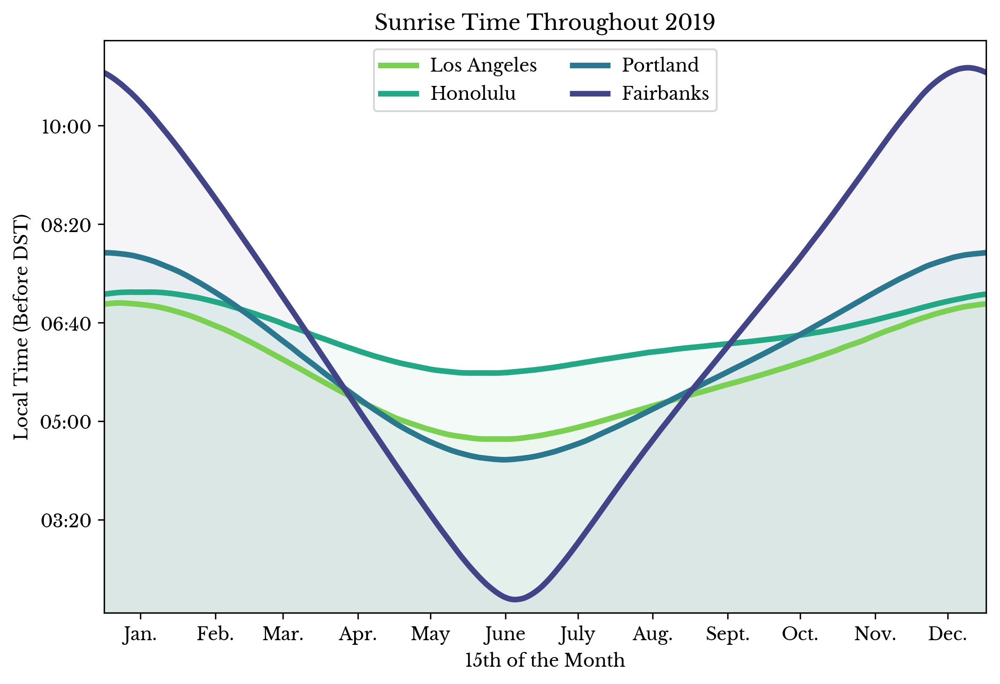
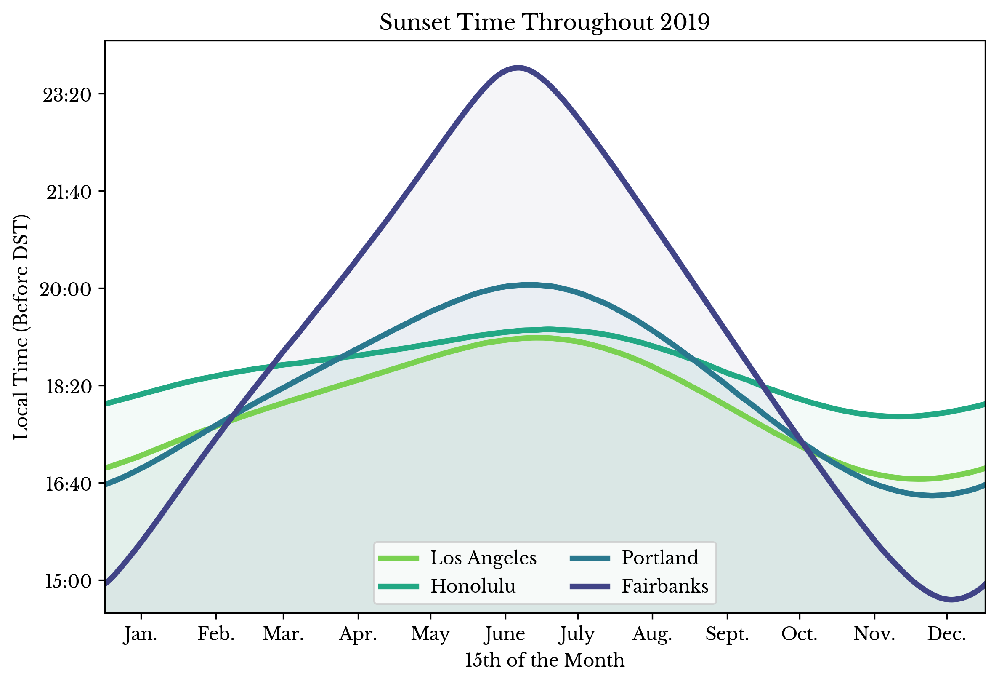
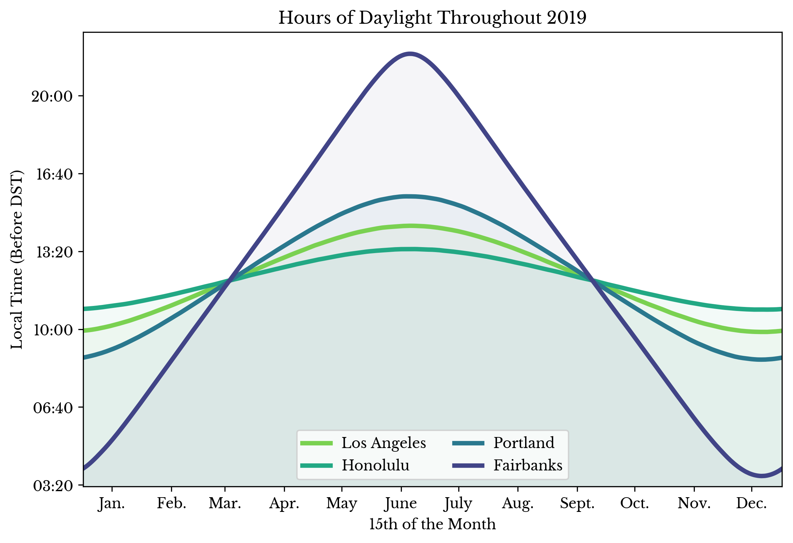

This post takes another look at Mortality Multiple Cause-of-Death records from the U.S. Division of Vital Statistics. Previous posts have analyzed records for the year 2016 and also deaths due to Influenza & Pneumonia in 2017. In this post, records from 1959 to the 2020, the latest year currently available, are analyzed.
Tags: Cause Of Death, Data Analysis, Data Visualization, Medicine, Statistics, Vital Statistics
The previous post discusses Kernel PCA and recipes, or formulae, for deriving new kernels from known good kernels. This post applies these approaches to generate vector embeddings in a specific domain: culinary recipes. The idea is to find a low-dimensional representation of recipes such that points in the embedding space are neighbors to similar recipes.
Tags: Data Science, Data Visualization, Machine Learning
One strength of kernel methods is their ability to operate directly on non-numerical objects like sets. As seen in the previous post, the Jaccard index on sets satisfies Mercer's condition and thus is a valid kernel. The process of proving a similarity measure is a valid kernel is somewhat involved, but thankfully several theorems can be employed to get more mileage out of the set of known good kernels. This post outlines some recipes for producing new valid kernels and introduces a method for obtaining numerical representations of samples using kernel methods.
Tags: Computer Science, Data Science, Data Visualization, Machine Learning
Kernel methods leverage the kernel trick to implicitly perform inner products in often high and even infinite dimensional feature spaces. For instance, the radial basis function (RBF) kernel can be shown to map to an infinite-dimensional feature space. In general, if a similarity function can be shown to satisfy Mercer's Condition, one may operate on the finite-dimensional Gram matrix induced by the function, while receiving the benefit of mathematical guarantees about the implied transformation.
Tags: Data Science, Machine Learning, Mathematics
The previous post presents methods for efficiently performing principal component analysis (PCA) on certain rectangular sparse matrices. Since routines for performing the singular value decomposition (SVD) on sparse matrices are readily available (e.g. svds and TruncatedSVD), it is reasonable to investigate the influence centering has on the resulting transformation.
Tags: Computer Science, Data Science, Machine Learning, Statistics
Consider a sparse mxn rectangular matrix \(\mathbf{X}\), where either \(m >> n\) or \(m << n\). Performing a principal component analysis (PCA) on \(\mathbf{X}\) involves computing the eigenvectors of its covariance matrix. This is often accomplished using the singular value decomposition (SVD) of the centered matrix \(\mathbf{X}-\mathbf{U}\). But, with large sparse matrices, this centering step is frequently intractable. If it is tractable, however, to compute the eigendecomposition of either an mxm or an nxn dense matrix in memory, other approaches are possible.
Tags: Computer Science, Data Science, Machine Learning, Mathematics, Statistics
Consider an m by n matrix \(\mathbf{A}\) and an m by 1 vector of integers \(\mathbf{w}\). Now, consider the matrix \(\mathbf{R}\), where \(\mathbf{R}\) is formed by taking \(\mathbf{A_i}\), that is the i-th row of \(\mathbf{A}\), and repeating it \(\mathbf{w_i}\) times. This new matrix \(\mathbf{R}\) has dimension s by n, where
\[\displaylines{s = \sum_{i=1}^{m}{\mathbf{w_i}}}\ .\]
If \(s >> m\), then it is undesirable to compute the full matrix \(\mathbf{R}\) and perform principal component analysis (PCA) on it. Instead, the highly structured form of \(\mathbf{R}\), suggests there should be a more efficient method to perform this decomposition. This method is known as weighted PCA and is the topic of this post.Tags: Data Science, Machine Learning, Mathematics, Statistics
This post explores the iterative constrained pathways rule ensemble (ICPRE) method introduced in an earlier post using the Titanic dataset popularized by Kaggle [1]. The purpose of the text is to introduce the features and explore the behavior of the library.
Some of the code snippets in this post are shortened for brevity sake. To obtain the full source and data, please see the ICPExamples GitHub page [2].
Tags: Computer Science, Data Science, Data Visualization, Machine Learning, Python, Statistics
Many optimization methods seek an optimal parameter set with regard to error or likelihood. Such a solution is most desirable in many regards. However, when the broader context of a problem is included, the indisputable superiority of the optimum frequently becomes less clear. This context often includes other guidelines and restrictions that may limit the usefulness of solutions lacking certain properties. Unfortunately, typical loss criteria can rarely take these into account.
This blog post presents a method that abandons the quest for optimality and instead focuses on better satisfying the broader context of a problem. It describes a method that does not attempt to find the minimum, but instead simply tries to get closer to it while respecting imposed constraints. This blog post describes the iterative constrained pathways optimizer.
Tags: Computer Science, Data Science, Machine Learning, Mathematics, Statistics
This video shows a simulation of genetic drift in a synthetically generated population as a result of sexual reproduction. A fixed population size is divided into different distinct sub-populations with differing allele frequencies. Starting with an initial population, 80 simulated epochs are passed in which each population member is replaced via sexual reproduction from two randomly selected parents. Pairs of parents are chosen such that the probability they come from the same sub-population is higher than the probability that they from come different sub-populations.
Figure 1: Simulated Genetic Drift in Populations
In the animation, the high-dimensional allele features for each population member are represented in two dimensions using PCA. The size and color of each marker encodes information about sub-population makeup and may be used to help distinguish highly mixed samples.Tags: Bioinformatics, Data Science, Data Visualization, Genetics, Genomics
At the time of this writing, NCBI Virus has over 40,000 complete CoV-2 sequences available. I made an interactive webpage to help visualize a random subset of these genomes using principal component analysis.
Figure 1: CoV-2 Explorer Interface
The x, y, size, and color axes respectively represent the first four principal axes. The plot markers identify viruses with unique nucleotide sequences in the GU280_gp02 (spike glycoprotein) gene region. The range sliders can be used to visualize shift in the viral genomes over time. The bar chart in the bottom right counts the frequency of SNP mutations in the sequences present in the specified date range.Tags: Cov-2, Covid-19, Data Visualization, Genome Sequencing, Genomics
The website openSNP allows users to share and discuss genetic information [1]. The purpose of the site is perhaps best summarized by its bio on Twitter: "crowdsourcing genome wide association studies" [2]. This post uses the machine learning and statistical techniques developed in previous blog entries to analyze the ancestry of openSNP members who have genotyping data associated to their accounts. By comparing the derived results with the self-reported answers from openSNP users, the accuracy of these methods on real-world data is assessed.
Tags: Ancestry, Bioinformatics, Data Science, Data Visualization, Genetics, Genomics, Machine Learning
In general, are parents more genetically similar to their children or to their siblings? Why do some siblings look alike while others look completely different? How can the genetic similarity between two individuals be computed? This post uses biostatistics to explore genetic similarity and tries to answer these and other questions.
Tags: Bioinformatics, Computer Science, Data Science, Data Visualization, Family, Genetics, Genomics, Machine Learning, Statistics
Consider the typical statement of the least squares problem.
\[\displaylines{\mathbf{A}\mathbf{x}=\mathbf{y}}\ ,\]
where \(\mathbf{A}\) is the m x n data matrix, \(\mathbf{x}\) is the n x 1 vector of regression coefficients, and \(\mathbf{y}\) is the m x 1 vector of target values.Tags: Data Science, Mathematics, Statistics
The 2020 general election in the U.S.A. is interesting in several regards. Perhaps chief among these is the influence of the COVID-19 pandemic on voting patterns and the subsequent shift to more reliance on mail-in voting. This post presents analysis of the preliminary election results and attempts to explain some of the observed trends.
Tags: Data Science, Data Visualization, Election, Election2020, Statistics, Voting
Counties within the United States vary substantially along a number of demographic and socioeconomic axes. These factors explain much of the variation observed throughout the US with respect to election and polling trends. This post attempts to untangle some of this complexity to give insight into the factors that influence voter behavior and other broader national trends.
Tags: Data Science, Data Visualization, Economics, Election, Voter Turnout, Voting
This post explores the composition of the United States using choropleth charts. The statistics and other values represented are as of the year 2016. Percentage changes in the number of democratic and republican voters are computed between the years 2008 and 2016.
Tags: Data Visualization, Demographics, Election
The following plot shows the number of tropical storms and major hurricanes occurring during each of the past 120 Atlantic hurricane seasons.
Tags: 2020, Data Visualization, Hurricane Delta, Hurricanes
Gradient boosting stands apart from many other supervised learning approaches in some regard. It is an ensemble method, However, the ensemble is constructed sequentially. It estimates a target value. But, it does so indirectly through the gradient.
Tags: Computer Science, Data Science, Machine Learning, Mathematics, Statistics
The following plots show the average amount of precipitation over the past 70 years for 8 cities in the USA. Each sub-image depicts a hypothetical calendar month and each colored square in a sub-image depicts a single day. The color of a given square describes the amount of precipitation a city receives for the day corresponding to that square on average.
Tags: Data Visualization, Statistics, Weather
In this post, the techniques outlined in an earlier blog post are employed to predict the ancestry of the author. Two approaches are considered: an approach using a classification model and one using similarity functions. Finally, scatter plots depicting low dimensional projections of the data are shown, plotting the genome of the author alongside samples from the IGSR dataset.
Tags: Bioinformatics, Data Science, Data Visualization
So, I decided to have my genome sequenced.
Tags: Free-Form
In this post, the severe acute respiratory syndrome coronavirus 2 (SARS-CoV-2) responsible for the recent pandemic is analyzed. Several attributes about the presently recorded virus genomes are plotted and genetic mutations in the sequences are traced to identify probable phylogenies among the samples.
Tags: Bioinformatics, Coronavirus, Covid-19, Data Science, Data Visualization, Medicine
Tags: Ancestry, Bioinformatics, Data Science, Genome Sequencing, Medicine, Snp, Statistics
Updated April 8th 2020
I've spent a disturbing amount of time trying to come up with a decent model for the CoVID-19 pandemic. The big challenge is how little good data there is. Pretty much all available data is riddled with confounding variables and bias. There is a long list of challenges but some I find most daunting are that:
Tags: Covid-19, Data Science, Data Visualization, Statistics
Tags: Coronavirus, Covid-19, Data Science, Data Visualization, Influenza, Image
The following charts compare the number of deaths resulting from the CoVID-19 pandemic in various countries as of March 20th 2020. The daily totals are normalized by the population in each country to produce per capita numbers. Per capita numbers allow for more easy comparison between countries.
Tags: Coronavirus, Covid-19, Data Science, Data Visualization, Medicine
The following plots explore the influence of two economic factors during recessions on the S&P 500 index: unemployment and gross domestic product (GDP). A linear model is constructed to predict the low of the S&P 500 index during a given recession using two transformed variables derived from the maximum unemployment and GDP differentials for that recession.
Tags: Data Science, Data Visualization, Economics, Statistics
The following plots show the amount of daylight, sunrise time, and sunset time for four US cities throughout the year of 2019.
|  |  |  |
Figure 1: Hours of Daylight, Sunrise Time, and Sunset Time by City
Tags: Astronomical Data, Data Visualization, Sunrise, Sunset, Weather
Maps are a fundamental data structure. Their prevalence is a testament to their importance. Indeed, many search problems can be reduced to the construction of an appropriate map. However, a search problem occasionally arises that is difficult to solve, at least directly, with a map. The interval query problem is one such problem.
Tags: Algorithms, C++, Computer Science, Interval Query, Software
With the rise of globalization, countries increasingly trade food products internationally. Acting in their own economic interests, countries buy and sell food where profitable, much like any other product. Import and export records provide a fascinating window into this complex world of international food trade.
Tags: Data Visualization, Economics, Food, International Trade
Decision trees are a simple yet powerful method of machine learning. A binary tree is constructed in which the leaf nodes represent predictions. The internal nodes are decision points. Thus, paths from the root to the leafs represent sequences of decisions that result in an ultimate prediction.
Decision trees can also be used in hierarchical models. For instance, the leafs can instead represent subordinate models. Thus, a path from the root to a leaf node is a sequence of decisions that result in a prediction made by a subordinate model. The subordinate model is only responsible for predicting samples that fall within the leaf.
This post presents an approach for a hierarchical decision tree model with subordinate linear regression models.
Tags: Cython, Data Science, Decision Tree, Machine Learning, Scikit-Learn, Statistics
Datasets containing nonhomogenous groups of samples present a challenge to linear models. In particular, such datasets violate the assumption that there is a linear relationship between the independent and dependent variables. If the data is grouped into distinct clusters, linear models may predict responses that fall in between the clusters. These predictions can be quite far from the targets depending on how the data is structured. In this post, a method is presented for automatically handling nonhomogenous datasets using linear models.
Tags: Computer Science, Data Science, Linear Algebra, Linear Models, Machine Learning, Mathematics, Research, Statistics
A problem that frequently arises when applying linear models is that of multicollinearity. The term multicollinearity describes the phenomenon where one or more features in the data matrix can be accurately predicted using a linear model involving others of the features. The consequences of multicollinearity include numerical instability due to ill-conditioning, and difficulty in interpreting the regression coefficients. An approach to decorrelate features is presented using the Gram-Schmidt process.
Tags: Data Science, Linear Algebra, Linear Models, Machine Learning, Mathematics, Statistics
I am a big fan of the CountVectorizer class in scikit-learn [1]. With a robust and easy interface that produces (sparse!) matrices, what’s not to love? Well, it’s… pretty… slow…
The performance is okay for 10s of MB of text, but GBs take minutes or more. It terms out that CountVectorizer is implemented in pure Python. The functions are single threaded too. It seems like low-hanging fruit. Just whip up some parallel C++, right? Well, not quite, but I’m getting ahead of myself.
Tags: C++, Computer Science, Data Science, Machine Learning, Nlp, Python, Sklearn, Software, Sparse Matrices
This chapter explores recessions in the United States of America. Datasets are collected from a variety of locations including the Federal Reserve Economic Data (FRED) and from the website of Yale professor and Nobel laureate Dr. Robert J. Shiller. A classifier model is constructed which predicts recessions and this model is analyzed for useful insights.
Tags: Data Science, Data Visualization, Economics, Machine Learning, Statistics, Stocks
Recently, I have been experimenting with windowing functions for time series data. While trying out my code, I came up with a nice and (somewhat) thought-provoking plot.
Tags: Data Science, Data Visualization, Economics, S&P, Statistics, Stocks
In this post, survey data collected from several speed dating events is analyzed. The events were conducted between 2002 and 2004 by two professors from Columbia University: Ray Fisman and Sheena Iyengar. In addition to questions about personal interests, the survey includes academic and occupational questions as well.
Tags: Data Science, Data Visualization, Human Behavior, Statistics
In this post, an approach to detecting malware using machine learning is presented. System call activity is processed and analyzed by a classification model to detect the presence of malicious applications.
Tags: Anti-Virus, Computer Science, Data Science, Machine Learning, Malware, Security, Windows
There is a dataset on Kaggle that contains questions taken from Stack Overflow about the Python programming language. This post briefly explores portions of the dataset.
Tags: Computer Science, Data Science, Data Visualization, Python, Software, Stack Overflow, Wordcloud
In this chapter, vital statistics for the United States of America are explored. The Center for Disease Control maintains several datasets containing vital statistics for the nation. These datasets contain records of deaths organized by year. Each record includes age, gender, race, cause of death, and other details. This chapter explores data for the year 2016.
Tags: Data Science, Data Visualization, Death, Medicine, Statistics
In this chapter, forenames in the USA are considered. The United States Social Security Administration (SSA) makes available a dataset containing information about Social Security records. The dataset contains counts of the number of records that exist for a specific first name and birth year.
Tags: Data Science, Data Visualization, Name Popularity, Statistics
Tags: Data Science, Data Visualization, Facial Attractiveness, Machine Learning, Statistics
This post explores the distribution of wealth among nonempty addresses on the Bitcoin network.
All addresses on the Bitcoin network are queried. The number of addresses with at least one satoshi is 24,473,765 at the time of the query. The resulting addresses are sorted by the amount of Bitcoin they contain. The list is divided into quantiles and the wealth of each quantile is plotted in a bar plot.
Tags: Bitcoin, Cryptocurrency, Data Science, Data Visualization, Statistics
This post is an introduction to using the TFANN module for classification problems. The TFANN module is available here on GitHub. The name TFANN is an abbreviation for TensorFlow Artificial Neural Network. TensorFlow is an open-source library for data flow programming. Due to the nature of computational graphs, using TensorFlow can be challenging at times. The TFANN module provides several classes that allow for interaction with the TensorFlow API using familiar object-oriented programming paradigms.
Tags: Classification, Computer Science, Data Science, Data Visualization, Machine Learning, Python, Tensorflow
Is the recent surge in Bitcoin's price a speculative bubble?
By definition, an economic bubble is a situation in which an asset is traded within a price range that far exceeds its intrinsic value. So, the question is: what is the intrinsic value of Bitcoin? The purpose of this post is to explain some of the technical details of Bitcoin so as to gain a better idea of its value.
Tags: Bitcoin, Computer Science, Cryptocurrency, Hashing, Security
In this post, deep learning neural networks are applied to the problem of optical character recognition (OCR) using Python and TensorFlow. This post makes use of TensorFlow and the convolutional neural network class available in the TFANN module. The full source code from this post is available here.
Tags: Computer Science, Data Science, Deep Learning, Machine Learning, Ocr, Python, Tensorflow
This post is made in introduction of a new YouTube series titled Deep Learning Deathmatch. In this series, a deep learning based AI that relies only on visual input is pitted against video game bosses. The resulting battle is recorded, edited, and compiled into a video. In the first video in the series, the AI fights the Oasis boss in Path of Exile.
Tags: Computer Science, Deep Learning, Gaming, Machine Learning, Neural Networks, Path Of Exile
This post is the fifth part of a series on creating an AI for the game Path of Exile © (PoE).
Tags: Ai, Computer Science, Data Science, Deep Learning, Gaming, Machine Learning, Path Of Exile
What characteristics do the works of famous authors have that make them unique? This post uses ensemble methods and wordclouds to explore just that.
Tags: Computer Science, Data Science, Data Visualization, Machine Learning, Matplotlib, Nlp, Python, Random Forest, Wordcloud
This post is the forth part of a series on creating an AI for the game Path of Exile © (PoE).
Tags: Computer Science, Deep Learning, Gaming, Machine Learning, Path Of Exile, Python, Screenshot, Software, Windows Api
This post explores historical weather data from Los Angeles, California over the period of 1906 to the present using Pandas and Matplotlib. The data in the post was collected from the National Centers for Environmental Information website. An order must be placed through the website to obtain a (temporary) link to download the data.
Tags: Climate Change, Data Science, Data Visualization, Los Angeles, Weather
I compiled a short video of footage from the Path of Exile AI. All footage is of the actual AI running. The video is available below on my YouTube channel.
Tags: Computer Science, Deep Learning, Gaming, Machine Learning, Path Of Exile, Poe, Python, Software, Video
Tags: Bitcoin, Cryptocurrency, Image, Matplotlib
So, I was looking for a way to use my XBox 360 Controller for Windows to browse the web and play games without built-in controller support. After searching for a while, I found most existing applications were either not free or did not work very well. Some required extra dll files (pro-tip DON'T search for "[insert name].dll missing" and download the first thing you find), or were not fully functional. Having experience handling mouse and keyboard input using Windows API, I decided to see if I could come up with something better. The result: GopherJoy.
Tags: Gaming, Golang, Path Of Exile, Pc Controller, Software, Windows
This post is part of a series on creating an AI for the game Path of Exile © (PoE). In this post, techniques for moving the character around a level are explored.
Tags: Bot, Computer Science, Gaming, Machine Learning, Path Of Exile, Poe, Python, Security, Software
This post is part of a series on creating an AI for the game Path of Exile © (PoE). In this post, techniques for updating the internal representation of the world given a static image of the game are explored.
Tags: 3D Projection, Camera Transform, Computer Science, Gaming, Machine Learning, Poe, Python, Software, Tensorflow
This post is the first in a series on creating an AI for the game Path of Exile based on deep learning and other machine learning techniques. A list of posts in this series follows.
Tags: Bot, Computer Science, Deep Learning, Gaming, Machine Learning, Poe, Python, Software
I recently acquired a NVidia GTX 970 Founder's Edition. The device had a damaged fan. As can be clearly seen in the photo, the fan did not sit properly in the mount. This caused the fan to scrape against its metal housing, preventing it from spinning. Actually it's not clear at all. Nevertheless, the side closest to the camera is higher than the other.
Tags: Computer Repair, Computers, Gpu, Hardware
A past blog post explored using multi-layer-perceptrons (MLP) to predict stock prices using Tensorflow and Python. This post introduces another common library used for artificial neural networks (ANN) and other numerical purposes: Theano. An MLP Python class is created implemented using Theano, and then the performance of the class is compared with the TFANN class in a benchmark.
Tags: Ai, Ann, Benchmark, Computer Science, Machine Learning, Mlp, Python, Tensorflow, Theano
This blog post introduces a type of neural network called a convolutional neural network (CNN) using Python and TensorFlow. A brief introduction to CNNs is given and a helper class for building CNNs in Python and TensorFlow is provided. The source code from this post is available here on GitHub.
Tags: Classification, Cnn, Computer Science, Computer Vision, Machine Learning, Neural Networks, Python, Tensorflow
This post presents a short script that plots neural network performance on high-dimensional binary data using MatPlotLib in Python. Binary vectors, or vectors only containing 0 and 1, can be useful for representing categorical data or discrete phenomena. The code in this post is available on GitHub.
Tags: Computer Science, Deep Learning, Machine Learning, Matplotlib, Neural Networks, Python, Software, Tensorflow
This post introduces a new program I wrote in Go and C named ShortX. ShortX allows for the creation of keyboard shortcuts that can be used to trigger other keys or commands. The program runs in the background and triggers shortcuts that are specified in a simple ini file.
Expansion is accomplished using low-level Windows API calls so that resource utilization is kept low. ShortX is useful for launching program in Windows, for custom macros in games, and more. Program executables are available on the Software page.
Tags: Golang, Hotkeys, Macros, Shortcuts, Software, Windows
This post is regarding the WPA2 4-way handshake that is used for authentication and the establishment of encryption keys for secure wireless communication. A practical implementation of the key derivation process is provided in python. The sample packet capture containing the 4-way handshake that is used in this post is available here. The complete source code discussed in this post is on Github. The software Wireshark is used to analyze the provided packet trace.
Tags: Anaconda, Computer Science, Cryptography, Networking, Python, Security, Wireless Networks, Wpa2
This post aims to introduce several basic text mining techniques. Sample implementations will be explored in the Scikit-learn library using Anaconda Python.
Tags: Data Science, Machine Learning
This post is a reference to a contributed article that I helped to co-author which was recently published in Communications of the ACM, Vol. 59 No. 4, Pages 58-65. The article, which I worked on while in graduate school, describes the advantages of using multimodal biometrics to secure mobile devices such as cell phones and tablets. An implementation for the Android OS of such a multimodal biometric system is presented along with results and a conclusion. Please find the article at this link, if you wish to read more.
N
Tags: Biometrics
In this post, the multi-layer perceptron (MLP) is presented as a method for smoothing time series data. A class based on the TensorFlow library is presented. Finally, for the sake of a toy example, the class is applied to the problem of smoothing historical stock prices (*).
Tags: Ann, Computer Science, Machine Learning, Mlp, Numpy, Python, Stock, Tensorflow
This post is concerned with an approach to generating guitar chords fingerings given run-time parameters regarding the guitar configuration and player's hand. The approach is expected to run acceptably on an Android mobile device and should be responsive to user input and should assign conventional fingerings high heuristic scores. The core source code that is described in this post is available at the following git repository. The app is available for download on the Google play store.
Tags: Android, Computer Science, Guitar, Mathematics, Music
Artificial neural networks have regained popularity in machine learning circles with recent advances in deep learning. Deep learning techniques trace their origins back to the concept of back-propagation in multi-layer perceptron (MLP) networks, the topic of this post. The complete code from this post is available on GitHub.
Tags: Computer Science, Machine Learning, Mathematics, Neural Networks, Numpy
In this post, two basic facial recognition techniques will be compared on the Faces94 database. Images from the Faces94 database are 180 by 200 pixels in resolution and were taken as the subjects were speaking to induce variations in the images. In order to train a classifier with the images, the raw pixel information is extracted, converted to grayscale, and flattened into vectors of dimension \(180 \times 200 = 36000\). For this experiment, 12 subjects will be used from the database with 20 files will be used per subject. Each subject is confined to a unique directory that contains only 20 image files.
Tags: Biometrics, Computer Science, Facial Recognition, Machine Learning, Mathematics
In this post, a classifier is constructed which determines the cultivar to which a specific wine sample belongs. Each sample consists of a vector \(\textbf{v}\) of 13 attributes of the wine, that is \(\textbf{v} \in \mathbb{R}^{13}\). The attributes are as follows:
Tags: Computer Science, Machine Learning, Mathematics
In this post, a linear classifier is constructed that aids in classifying fine needle aspiration (FNA) cytology results. The classifier receives a vector consisting of aggregate measurements from FNA of a breast mass. Each vector contains aggregations, over multiple cell nuclei, of the following ten measurements:
Tags: Computer Science, Data Science, Machine Learning, Mathematics
{kind=link}
{kind=link}
{kind=link}
{kind=link}
{kind=link}